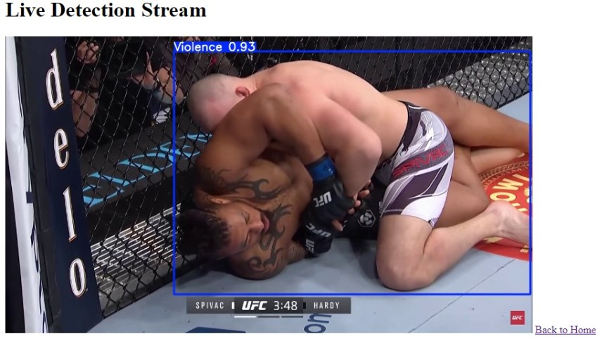
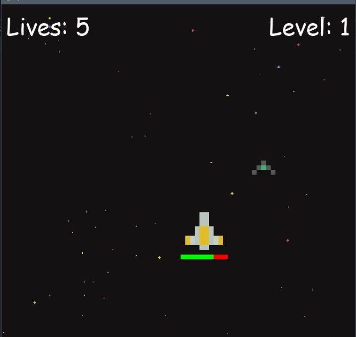

projects
Selected work.
from the résumé's key projects, plus a few side builds
Novel Actor-Critic Algorithm for Reinforcement Learning
Final year project. Proposed a modification to the critic function in standard Actor-Critic architectures, achieving state-of-the-art performance that surpassed prior baselines across multiple OpenAI Gym environments.
Enterprise Voice AI Agent
Intelligent appointment scheduler with RAG context retrieval, webhook tool-calling, and real-time telephony integration — built for low-latency production use on live phone calls.


LocoBot — Face Recognition & Faculty Meeting Assistant
Lab robot that recognizes students in real time via a Flask API backend and uses a RAG chatbot to help them book meetings with faculty members — deployed for live use in the lab.


Violence Detection System
Retrained YOLOv8 for real-time video analysis with streaming annotated-frame alerts. Detects violent activity in a video feed, extracts the relevant clip, and can forward it to officials for review.

Meeting Scheduling Agent

Gesture-Based Game Controller

Gesture-Based Virtual Painter

BLDC Motor Speed Prediction
